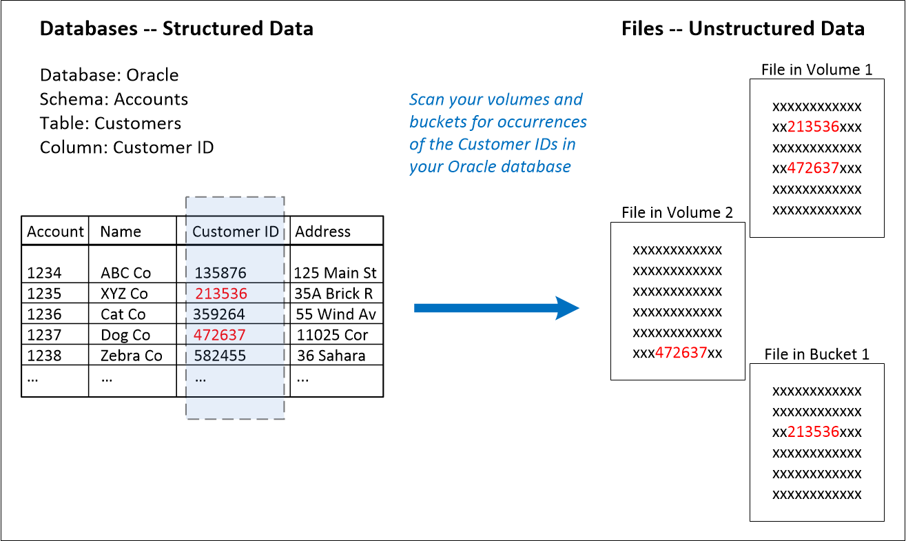
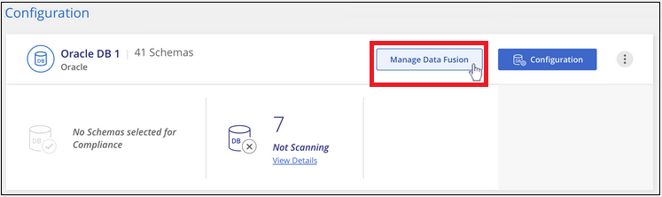
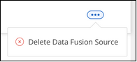
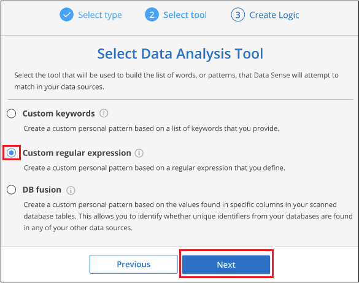

Solicitar cambios en el documento
Solicitar cambios en el documento Editar en GitHub
Editar en GitHub Guía del colaborador
Guía del colaboradorAdición de identificadores de datos personales a los análisis de detección de datos
Colaboradores
Data Sense ofrece muchas formas de agregar una lista personalizada de "datos personales" que Data Sense identificará en futuras exploraciones, lo que le proporciona una imagen completa sobre dónde residen los datos potencialmente confidenciales en los archivos de su organización.
-
Puede agregar identificadores únicos basados en columnas específicas de las bases de datos que está analizando.
-
Puede agregar palabras clave personalizadas desde un archivo de texto: Estas palabras se identifican dentro de sus datos.
-
Puede agregar un patrón personal utilizando una expresión regular (regex) — el regex se agrega a los patrones predefinidos existentes.
Todos estos mecanismos para agregar criterios de análisis personalizados se admiten en todos los idiomas.

|
Las capacidades descritas en esta sección sólo están disponibles si ha elegido realizar un análisis de clasificación completo en sus orígenes de datos. Los orígenes de datos que han tenido un análisis de sólo asignación no muestran detalles de nivel de archivo. |
Agregar identificadores de datos personales personalizados de las bases de datos
Una función que llamamos Data Fusion le permite analizar los datos de su organización para identificar si los identificadores únicos de sus bases de datos se encuentran en cualquiera de sus otros orígenes de datos. Puede elegir los identificadores adicionales que Data Sense buscará en sus exploraciones' seleccionando una columna o columnas específicas en una tabla de base de datos. Por ejemplo, el siguiente diagrama muestra cómo se utilizan data Fusion para analizar los volúmenes, bloques y bases de datos en busca de apariciones de todos los ID de cliente de la base de datos de Oracle.

Como puede ver, se han encontrado dos ID de cliente únicos en dos volúmenes y en un bloque de S3. También se identificarán todas las coincidencias en las tablas de la base de datos.
Tenga en cuenta que como está analizando sus propias bases de datos, cualquier idioma en el que se almacenen los datos se utilizará para identificar datos en futuros análisis de detección de datos.
Debe tener "se añadió al menos un servidor de base de datos" En detección de datos antes de poder agregar orígenes de Fusion de datos.
-
En la página Configuración, haga clic en Administrar Fusion de datos en la base de datos donde residen los datos de origen.

-
Haga clic en Agregar origen de Fusion de datos en la página siguiente.
-
En la página Add Data Fusion Source:
-
Seleccione el esquema de base de datos en el menú desplegable.
-
Introduzca el nombre de la tabla en ese esquema.
-
Introduzca la columna, o Columns, que contiene los identificadores únicos que desea utilizar.
Al agregar varias columnas, introduzca cada nombre de columna o nombre de vista de tabla en una línea independiente.

-
-
Haga clic en Agregar origen de Fusion de datos.
La página Inventario de Data Fusion muestra las columnas de origen de base de datos que ha configurado detección de datos para analizar.

Después del siguiente análisis, los resultados incluirán esta nueva información en el Panel de cumplimiento en la sección "resultados personales" y en la página Investigación del filtro "datos personales". Cada columna de origen que agregó aparece en la lista de filtros con el formato "Table.column", por ejemplo Customers.CustomerID.

Eliminar un origen de Data Fusion
Si en algún momento decide no analizar sus archivos mediante un origen de Data Fusion determinado, puede seleccionar la fila de origen en la página de inventario de Data Fusion y hacer clic en Eliminar origen de Data Fusion.

Agregue identificadores de datos personales personalizados mediante un regex
Puede agregar un patrón personal para identificar información específica de los datos mediante una expresión regular personalizada (regex). Esto le permite crear un nuevo regex personalizado para identificar nuevos elementos de información personal que aún no existen en el sistema. El regex se agrega a los patrones predefinidos existentes que Data Sense ya utiliza, y los resultados serán visibles en la sección patrones personales.
Por ejemplo, puede que desee ver dónde se mencionan los ID de producto internos en todos sus archivos. Si el ID de producto tiene una estructura clara, por ejemplo, es un número de 12 dígitos que comienza con 201, puede utilizar la característica personalizada regex para buscarla en sus archivos. La expresión regular de este ejemplo es \b201\d{9}\b.
Después de agregar el regex, Data Sense reiniciará el análisis de todos los orígenes de datos. Una vez finalizada la exploración, los nuevos resultados aparecerán en el Panel de cumplimiento de detección de datos bajo la sección "resultados personales" y en la página Investigación del filtro "datos personales".
-
En la ficha Custom Classificers, haga clic en Agregar nuevo clasificador para iniciar el asistente Add Custom Classifier.
-
En la página Select type, escriba el nombre del clasificador, proporcione una breve descripción, seleccione Identificador personal y, a continuación, haga clic en Siguiente.
El nombre que introduzca aparecerá en la interfaz de usuario de detección de datos como encabezado para los archivos escaneados que coincidan con los requisitos del clasificador. También puede marcar la casilla "Mask Detected results in the system" para que el resultado completo no aparezca en la interfaz de usuario. Por ejemplo, puede que desee hacer esto para ocultar los números completos de la tarjeta de crédito o datos personales similares.
-
En la página Select Data Analysis Tool, seleccione expresión regular personalizada como el método que desea utilizar para definir el clasificador y, a continuación, haga clic en Siguiente.

-
En la página Create Logic, introduzca la expresión regular y las palabras de proximidad y haga clic en hecho.
-
Puede introducir cualquier expresión regular legal. Haga clic en el botón Validar para que la función de detección de datos compruebe que la expresión regular es válida, y que no es demasiado amplia, lo que significa que devolverá demasiados resultados.
-
Opcionalmente, puede introducir algunas palabras de proximidad para ayudar a refinar la precisión de los resultados. Estas son palabras que normalmente se encuentran dentro de los 300 caracteres del patrón que está buscando (antes o después del patrón encontrado). Introduzca cada palabra o frase en una línea diferente.
-
Se agrega el clasificador y Data Sense comienza a volver a analizar todos los orígenes de datos. Volverá a la página Clasificadores personalizados, donde podrá ver el número de archivos que coinciden con el nuevo clasificador. Los resultados del análisis de todos los orígenes de datos tardarán un poco en función del número de archivos que se deban analizar.
Vea los resultados de sus clasificadores personalizados
Puede ver los resultados desde cualquiera de los clasificadores personalizados en el Panel de cumplimiento y en la página Investigación. Por ejemplo, esta captura de pantalla muestra la información coincidente en el Panel de cumplimiento en la sección "resultados personales".

Haga clic en la Para ver los resultados detallados en la página Investigación.
Además, todos los resultados del clasificador personalizado aparecen en la ficha Clasificadores personalizados y los 6 resultados superiores del clasificador personalizado se muestran en el Panel de cumplimiento, como se muestra a continuación.

Administrar clasificadores personalizados
Puede cambiar cualquiera de los clasificadores personalizados que haya creado utilizando el botón Editar clasificador.
Y si decide en algún punto posterior que no necesita detección de datos para identificar los patrones personalizados que ha agregado, puede utilizar el botón Eliminar clasificador para eliminar cada elemento.
Agregar palabras clave personalizadas desde un archivo de texto
Puede agregar palabras clave personalizadas a Data Sense para que identifique información específica en sus datos. Agregue las palabras clave de un archivo de texto que defina. Las palabras clave se agregan a las palabras clave predefinidas existentes que Data Sense ya utiliza, y los resultados serán visibles en la sección patrones personales.
Por ejemplo, es posible que desee ver dónde se mencionan los nombres internos de producto en todos los archivos para asegurarse de que estos nombres no están accesibles en ubicaciones que no son seguras.
Después de actualizar las palabras clave personalizadas, detección de datos reiniciará el análisis de todos los orígenes de datos; los nuevos resultados aparecerán en detección de datos después de que haya finalizado el análisis.
Debe agregar o crear los archivos de texto que incluyan las palabras clave personalizadas en la siguiente ubicación en el sistema de detección de datos:
/opt/netapp/Datasense/tools/datascience/custom_keywords/keywords_sets Puede crear un único archivo con varias palabras clave, o puede agregar muchos archivos que contienen determinadas palabras clave. El formato del archivo es una palabra en cada línea, por ejemplo, los nombres de producto internos que son tipos de búhos se enumeran a continuación:
internal_product_names.txt
barred barn horned snowy screech
La búsqueda de detección de datos para estos elementos no distingue mayúsculas de minúsculas.
Tenga en cuenta los siguientes requisitos:
-
El nombre de archivo no debe contener dígitos.
-
Cada archivo puede contener un máximo de 100,000 palabras. Si hay más palabras, sólo se añaden los primeros 100,000.
-
Cada palabra debe tener al menos 3 caracteres. Se ignoran las palabras más cortas.
-
Las palabras duplicadas sólo se añaden una vez.
Acceda a la línea de comandos
Necesitará acceder al sistema de detección de datos para iniciar el comando y agregar palabras clave personalizadas.
Cuando se instala Data Sense en las instalaciones, puede acceder a la línea de comandos directamente.
Cuando se implementa la detección de datos en el cloud, necesita SSH a la instancia de Data Sense. Debe SSH al sistema introduciendo el usuario y la contraseña, o usando la clave SSH que ha proporcionado durante la instalación de BlueXP Connector. El comando SSH es:
ssh -i <path_to_the_ssh_key> <machine_user>@<datasense_ip> * <path_to_the_ssh_key> = ubicación de claves de autenticación ssh * <machine_user>.:
+
Para AWS: Utilice <ec2-user>
Para Azure: Utilice el usuario creado para la instancia de BlueXP
** Para GCP: Utilice el usuario creado para la instancia de BlueXP
-
<datasense_ip> = dirección IP de la instancia de la máquina virtual
Tenga en cuenta que deberá modificar las reglas entrantes del grupo de seguridad para acceder al sistema en la nube. Para obtener más información, consulte:
Sintaxis de comandos para agregar palabras clave personalizadas
La sintaxis del comando para agregar palabras clave personalizadas desde un archivo es:
sudo bash tools/datascience/custom_keywords/upload_custom_keywords.sh -s activate -f <file_name>.txt * <file_name> = este es el nombre del archivo que contiene las palabras clave.
Ejecute el comando desde la ruta /opt/netapp/Datosense/.
Si ha creado muchos archivos que contienen palabras clave personalizadas, puede agregar las palabras clave de todos los archivos al mismo tiempo utilizando este comando:
sudo bash tools/datascience/custom_keywords/upload_custom_keywords.sh -s activate
Ejemplo
Para ver dónde se mencionan los nombres de producto internos en todos los archivos, escriba el siguiente comando.
[user ~]$ cd /opt/netapp/Datasense/
[user Datasense]$ sudo bash tools/datascience/custom_keywords/upload_custom_keywords.sh -s activate -f internal_product_names.txtlog v1.0 | 2022-08-24 08:16:25,332 | INFO | ds_logger | upload_custom_keywords | 126 | 1 | None | upload_custom_keywords_126 | All legal keywords were successfully inserted .Resultados Después del siguiente análisis, los resultados incluirán esta nueva información en el Panel de cumplimiento en la sección "resultados personales" y en la página Investigación del filtro "datos personales".

Como puede ver, el nombre del archivo de texto se utiliza como nombre en el panel resultados personales. De esta manera puede activar palabras clave de diferentes archivos de texto y ver los resultados de cada tipo de palabra clave.
Desactivar palabras clave personalizadas
Si decide en algún punto posterior que no necesita detección de datos para identificar ciertas palabras clave personalizadas que agregó previamente, utilice la opción desactivar del comando para quitar las palabras clave definidas en el archivo de texto.
sudo bash tools/datascience/custom_keywords/upload_custom_keywords.sh -s deactivate -f <file_name>.txt Por ejemplo, para quitar las palabras clave definidas en el archivo *Internal_PRODUCT_Names.txt*:
[user ~]$ cd /opt/netapp/Datasense/
[user Datasense]$ sudo bash tools/datascience/custom_keywords/upload_custom_keywords.sh -s deactivate -f internal_product_names.txtlog v1.0 | 2022-08-24 08:16:25,332 | INFO | ds_logger | upload_custom_keywords | 87 | 1 | None | upload_custom_keywords_87 | Deactivated keyword pattern from internal_product_names.txt successfully